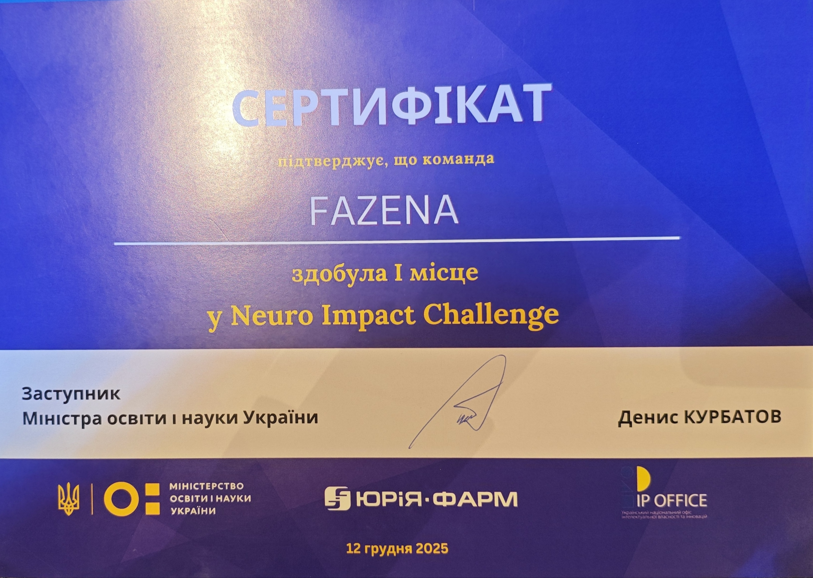
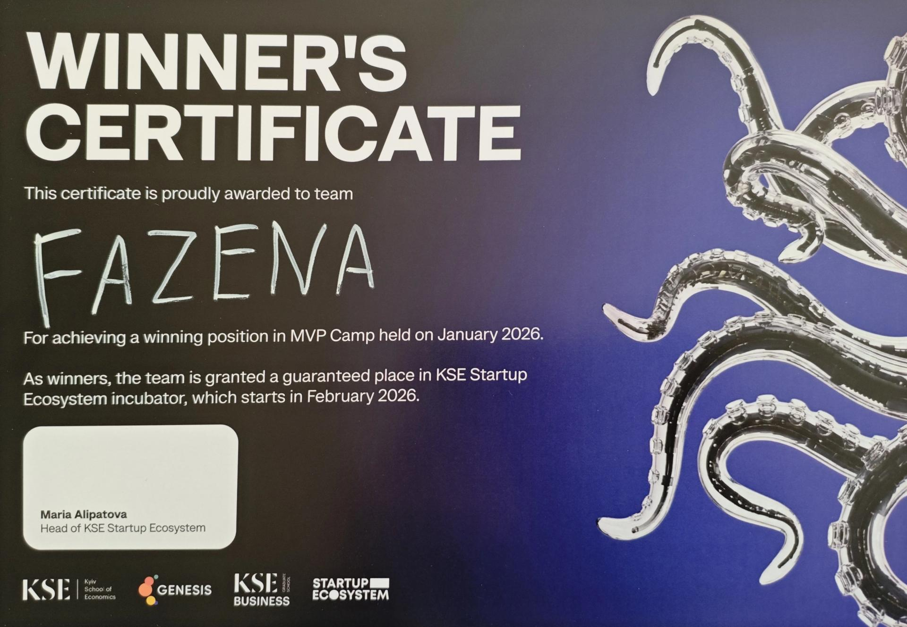
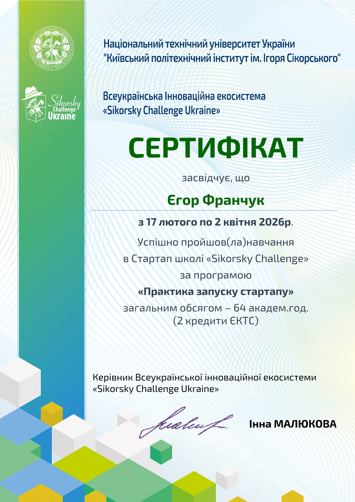
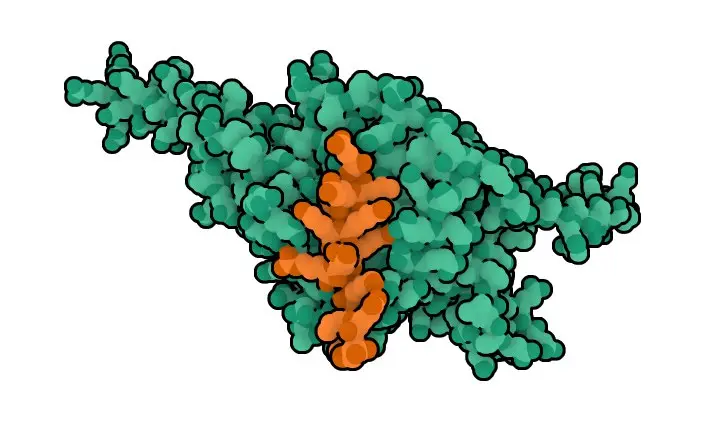
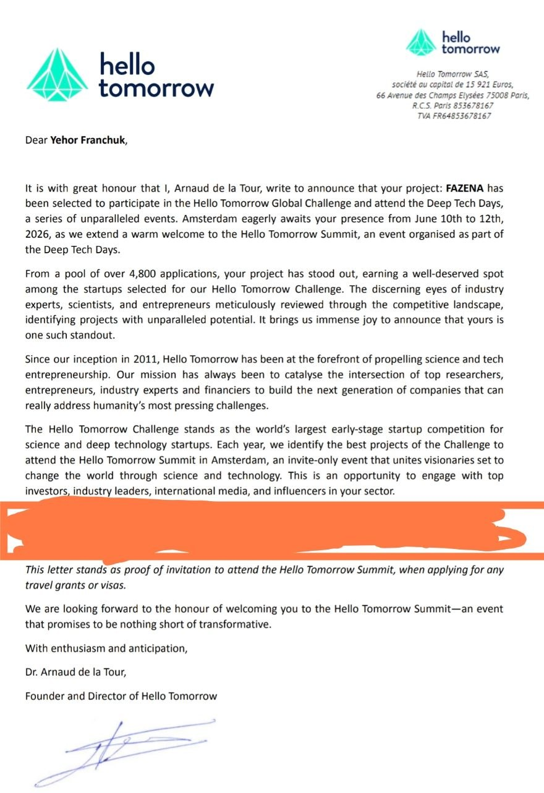
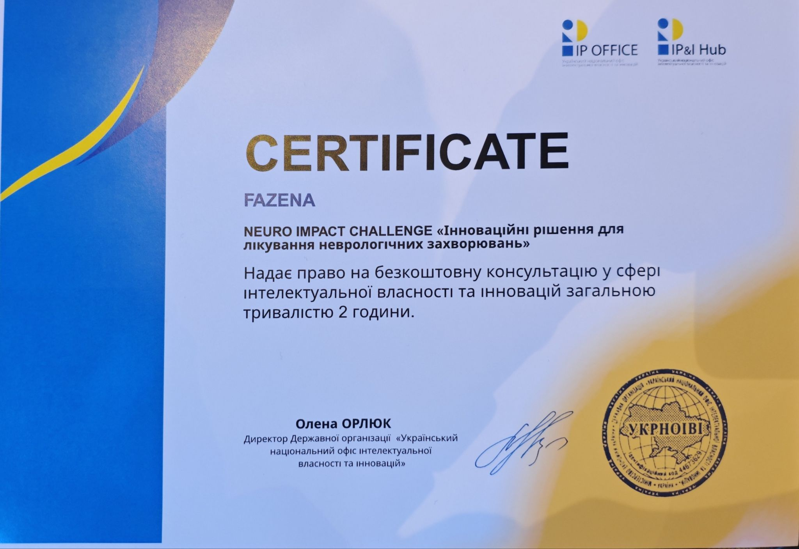
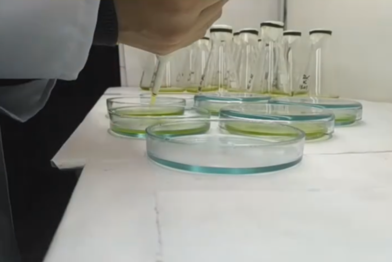

About the Startup
Yefarm is a cutting-edge deep tech startup dedicated to accelerating drug discovery for neurodegenerative conditions, focusing primarily on finding curative treatments for Alzheimer's disease.
By combining advanced machine learning, high-precision molecular docking, and rigorous molecular dynamics simulations, Yefarm creates an integrated computational pipeline for rational drug design. This approach allows us to rapidly model ligand-receptor interactions, predict binding affinities, and simulate atomic-level dynamics of candidate molecules under physiological conditions.
Our Innovation Platforms
We develop cutting-edge computational platforms for targeting pathological pathways and structural RNAs, avoiding team structures and technologies belonging to external co-founders:
1. RNA Hunter
A deep machine learning model combined with an RNA language model designed for the high-throughput small molecule screening of regulatory and non-coding RNAs, with no target length limitations. It evaluates each nucleotide based on its biophysical properties to identify specific pockets.
2. Prozena
A machine learning and AI sub-platform tailored for classical drug discovery pipelines targeting pathological proteins, optimizing ligand binding and pharmacokinetics.
3. Refazenation
An automated reverse structure-based drug repurposing pipeline to identify new molecular targets for existing drugs, facilitating rapid clinical translations.
4. CADD Services
B2B computational screening services (exclusively virtual or with wet-lab experimental validation) for pharma and biotech R&D departments to filter out toxic compounds early and minimize clinical costs.
Founder & Lead Researcher

Yehor Franchuk
Bioinformatician & Pharmaceutical Biotechnologist
Yehor holds an MSc in Biology and Biochemistry (Bioinformatics and Structural Biology) and a BSc in Pharmaceutical Biotechnology, both with honors. He combines bioinformatics expertise with practical laboratory skills to spearhead Yefarm's computational drug discovery pipelines.
NeuroImpact Challenge 2025
Victory in the NeuroImpact Challenge 2025, validating our methodology for ABCA7 molecular modulation for Alzheimer's disease treatment.

MVP Camp Winner Certificate
Yehor Franchuk & Yuliia Naum

Sikorsky Challenge Incubation
Completing Startup School Season 13

Scientific Foundation & Publications
Yefarm is built on peer-reviewed, structure-oriented computer-aided drug design (CADD) research:
1. RNA Hunter: Deep ML Combined with RNA Language Model
Title: RNA hunter–a deep machine learning model combined with an rna language model for high-throughput small molecule screening of non-coding RNAs
This research details the structural backbone of the RNA Hunter platform, outlining how neural networks predict compound bindings to complex 3D RNA structures.
Google Scholar Citation ↗2. CERT1 Peptide Binder Inhibition
Title: Rational in silico design of a peptide binder that inhibits CERT1
Investigates the structure-based rational design of peptides that block the CERT1 transfer domain, serving as a template for modeling peptide modulators.
ResearchGate Publication ↗
3. Rational In Silico Redesign of CERT1
Title: Rational in silico redesign of the CERT1 protein
Semi-rational redesign targeting the lipid-binding START domain to enhance solubility and adapter stability for compound screening.

Startup Journey & Milestones
Yefarm was originally founded and developed under the name FAZENA, starting as an ambitious collaborative initiative focused on protein engineering and redesign. As the startup matured and its focus sharpened on therapeutic solutions for Alzheimer's disease, the project transitioned to Yefarm to emphasize its specialized drug discovery mission.
Key achievements in our journey include:
- NeuroImpact Challenge 2025: First place winner, recognized for our innovative framework combining AI and molecular dynamics for target-specific drug candidate design.
- MVP Camp by KSE 2025: Winner of the intensive MVP acceleration camp organized by the Kyiv School of Economics.
- KSE Startup Ecosystem Vol. 3 Demo Day: Participated as one of the highlighted deep-tech startups presenting to international venture funds and mentors.
- VivaTech 2026: Invited to the prestigious VivaTech 2026 conference in Paris after successfully passing the 1st national selection in Ukraine.
- Hello Tomorrow 2026: Selected and invited to participate in the global deep tech summit, Hello Tomorrow 2026, held in Amsterdam.
- IP Office Support: Won a free expert consultation from the Ukrainian National Office for Intellectual Property and Innovations (UANIPIO), supporting our patent and IP protection strategy.
Hello Tomorrow 2026

IP Office Consultation


CADD Structure Modeling & Verification